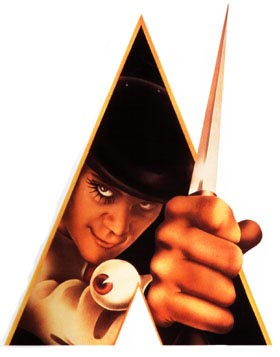

Psicópata
 De: La Frikipedia, la enciclopedia extremadamente seria.
De: La Frikipedia, la enciclopedia extremadamente seria.

|
La información contenida en este artículo es una mínima parte de su jugo total, así que ponte los guantes, saca el tupperwere y empieza a exprimir el tema. Si lo haces serás recompensado con una galleta en almíbar y algo más.
|
 Alex, posiblemente nuestro psicópata favorito.
El psicópata es el típico hombre que tiene problemas mentales , traumas , etc . Personaje entrañable de las películas setenteras, que suele ser conocido por sus maneras desabridas y su tendencia a la locura homicida, pero existen varios tipos de psicópatas como ejemplo tener el Síndrome de Yuno Gasai Normalmente suelen ser personas a las cuales les j*76&$"n la infancia con bulling, abusos y abusos sexuales.
Descripción
Un psicopata es un asesino , loco , degenerao , entre otros.....
La mayoria de los psicopatas tienen seguidores , y esos seguidores llegan hasta un punto de querer violarlos brutalmente , gracias a su ¨hermosura¨.
Un ejemplo a lo que me refiero...pobre..
Mayormente , los psicopata son hombres , y no muejeres PORQUE ?? .....pz las muejeres no tienen los o/&%$/$s suficientes para volverse psicópatas .
Patología
El psicópata suele ver alucinaciones y escuchar voces que le dicen: "¡Mata a todo el mundo, Wenceslao!" o como quiera que se llame el susodicho o susodicha. Aunque a veces el nombre no coincide con el suyo, y entonces el psicópata tiene que confirmar: "¿Me dices a mí, a Carolina?" Es un lío....
Hasta ahora casi nadie a logrado entender lo que realmente pasa en el cerebro de un psicopata.
Algunos se vuelven psicopatas para imitar a uno ya existente.
Pero lo que muchos ignoran es que... todos podemos volvernos uno con tan solo un mal dia
Lo que no falla nunca es el odio visceral hacia toda la humanidad, de difícil cura.
aunque estén locos los pobres... tienen sentimiento ese lindo y hermoso sentimiento de matar ..(pero tienen sentimientos)

Los psicópatas y sus imitadores
Psicópatas famosos 1.1
- Calígula: Comía y bebía mientras presenciaba ejecuciones; en medio de las fiestas, tomaba a la esposa de cualquier invitado, la violaba y volvía a la mesa para contar cómo le fue. O.O
- Erzsébet Bathory:Además de una perversión sádica y sexual, la Condesa Elizabeth Báthory sentía especial atracción por la sangre, y no sólo se contentaba de beberla, como es habitual en los llamados asesinos vampíricos, sino que se bañaba en ella con el fin de impedir que su piel envejeciese al paso de los años.
- Hannibal Lecter: tiene una rara afición por el canibalismo gourmet, que le lleva a degustar sesos e higadillos y a despreciar las partes más bastas (glúteos, carrillos) aunque sean también las más ricas.
- Charles Manson: maestro de una secta satánica que acabó cometiendo varios asesinatos rituales.
- Ted Bundy: psicópata asesino en la vida real.
- Norman Bates: psicópata de la película (valga la redundán) Psicosis. Un gilipollas de chico violado por su mami hasta que se hartó y se la cargó. Su mami se llamaba Norma Bates y Norman tiene la personalidad de ella. Es malisimo cuando es Norma y gilipollas cuando es Norman.
- Stephen King: ha creado grandes psicópatas como Jack Torrent o Carrie.
- Alex DeLarge: el adolescente psicópata llevado al extremo. Viola, roba y mata sin pudor. Luego se vuelve una nenaza gracias a unas medicinas especiales.
- Tú: Porque yo se lo que hiciste a Justin Bieber... Lo vi todo .....
Psicópatas ficticios
- The joker: El famoso villano de batman es un psicopata que nos demuestra que solo un mal dia puede cambiar a un hombre.
- Carrie: Le j&%@/"!n la vida y cuando descubre sus poderes decide vengarse.
- La Naranja Molesta: Siempre tocando los cojones a personas y frutas. Chilla y hace juegos de palabras sin sentido.
- Freezer: mato a millones de personas murieron por su mano solo porque el quería dominar al mundo. (gran idiotez ...Goku lo hizo m/&%$a)
- Magin Boo: A quien no se comia este gordinflon?
- jigsaw: un enfermo mental que creaba juegos de tortura fatales
Psicópatas Famosos 1.2
- Jeff the jiller : Mato a toda su familia (o por lo menos eso pensó), cuando se volvió loco , por que un tal Randy le j&%/o prácticamente TODA la vida .
- Hermana de IP anónima : Lo que puede hacer un día de trabajo y/o estudio ....
- Los canibales esos ¡¡ : Un dia sin comer afecta todo ¡¡
- Los animales : los carnívoros mas que todo , una vesz que te ven y no estan de hunmor ....date por muerto.
Ver también
Nota
Soy nueva aquí por lo tanto apenas tengo conocimientos en esta pagina, la adopte por que me llamo la atención el tema y quise rescatarlo.
Enlaces externos
Autor(es):
- Fordus
- Epikurolibre
- Azulejos
- Rodma
- Alven94
- Dark temptation
- SakuraMiya
- Kevrochi
- Tokyo Mew Mew.
- Locox
Frikipedia 2005-2016, Licencia
GFDL 1.2 - Extraído por FrikiLeaks